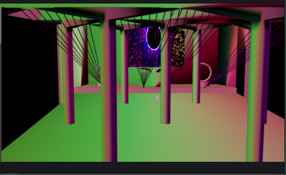
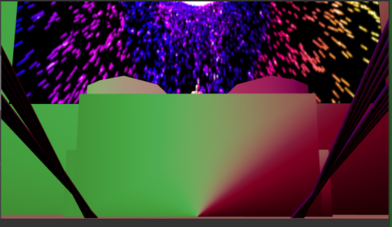
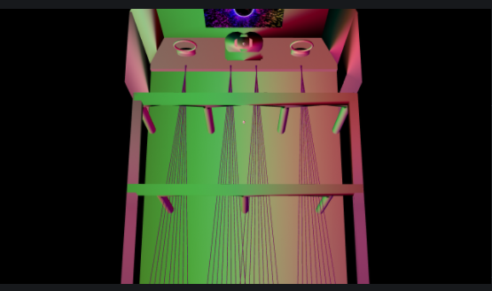
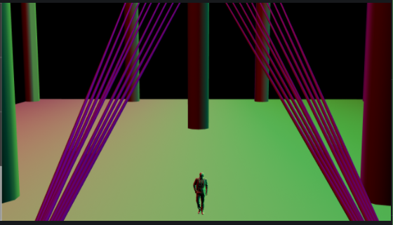

CSMA 212
Professor Ivaylo Getov
This was a project where I designed an audio reactive experience for an EDM concert. This challenged my knowledge of touch designer as a program to figure out how to simulate lights and lasers, build an environment from the ground up, and explore the vast range of SOP's, TOP's and CHOP's in order to make the audio reactive content. It also gave me an awesome opportunity to gain insight on what people like Deadmau5 do for a living and are very successful in doing so.